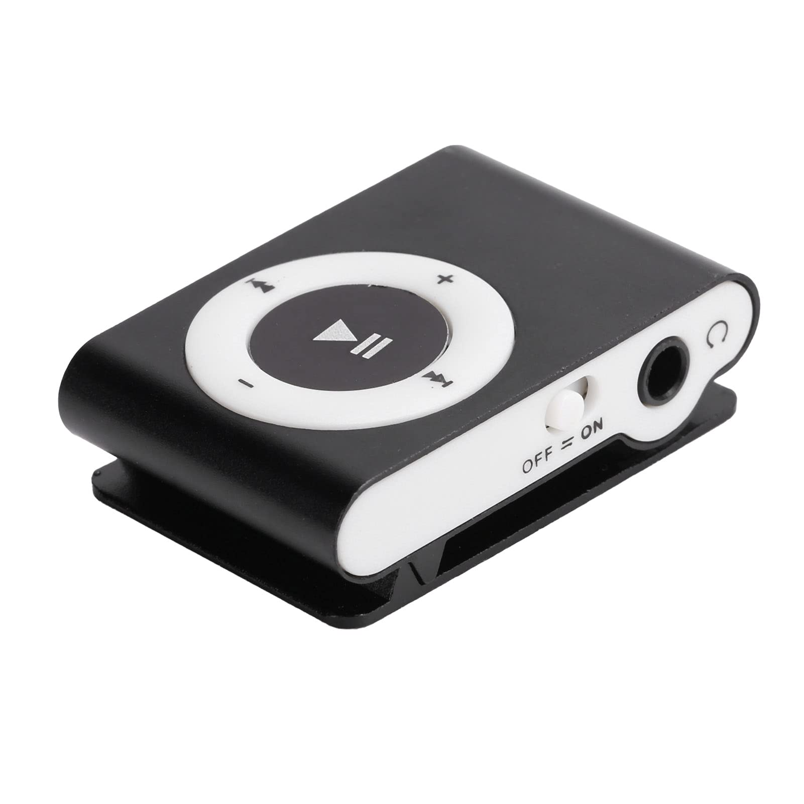

MP3 Mini

MP3 Grande
|  MP3 Mini | MP3 Grande | ||||
|---|---|---|---|---|---|
| Capacidad de almacenamiento | 4GB (1.000 canciones) | 8GB (2.000 canciones) | 30GB (7.500 canciones) | 80GB (20.000 canciones) | |
| Colores | |||||
| Pantalla | LCD de 3 cm (diagonal) con retroiluminación | LCD de 6 cm (diagonal) con retroiluminación | |||
| Tiempo de carga | Unas 3 horas | Unas 4 horas | |||
| Unas 2 horas para alcanzar el 80% de la capacidad | |||||